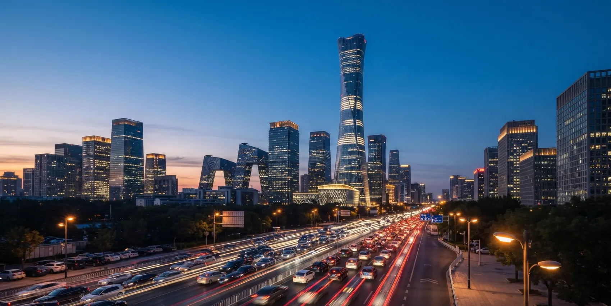

Beijing

03 Forbidden City
Walk the courtyard
Lanterns glow, mist rolls over the stone, and the great hall waits at the end of the axis.
 Taught byThorfinn
Taught byThorfinn04 Temple of Heaven
Circle the hall
Golden ginkgo leaves drift past the round blue roof where emperors prayed for a good harvest.
Taught byGojo
About this guide
This is a Chinese project-based learning guide about Beijing. It walks the Central Axis, a straight road that runs north to south through the middle of the city, and every stop is taught by a different anime teacher. Read the chapters, learn a few phrases, and plan three perfect days.
Start the walkChapters
01WelcomeThe northern capital and the road that runs through it.Goku02Great WallThe wall north of Beijing, rebuilt by the Ming dynasty. Pick your section.Naruto03Forbidden CityTwenty-four emperors, 980 buildings and one straight axis.Thorfinn04Temple of HeavenA round hall built without a single nail, plus the Summer Palace.Gojo05HutongsGrey brick lanes, courtyard homes and bicycles at dusk.Aizen06FoodPeking duck, noodles, dumplings and hotpot.Luffy07Modern BeijingTowers, a Bird's Nest and an airport shaped like a starfish. Doraemon08TransitSubway, bicycles and trains that reach Shanghai in four and a half hours.
Doraemon08TransitSubway, bicycles and trains that reach Shanghai in four and a half hours. Guts09Parks and HillsFragrant Hills, Beihai and the Ming Tombs.Levi10LanguageTwelve survival phrases and the five tones of Mandarin.Anya11Seasons and FestivalsWhen to go, and which festival to plan around.Usagi12Three DaysA sample itinerary and your final checklist.
Guts09Parks and HillsFragrant Hills, Beihai and the Ming Tombs.Levi10LanguageTwelve survival phrases and the five tones of Mandarin.Anya11Seasons and FestivalsWhen to go, and which festival to plan around.Usagi12Three DaysA sample itinerary and your final checklist. Totoro
Totoro
Goku02Great WallThe wall north of Beijing, rebuilt by the Ming dynasty. Pick your section.Naruto03Forbidden CityTwenty-four emperors, 980 buildings and one straight axis.Thorfinn04Temple of HeavenA round hall built without a single nail, plus the Summer Palace.Gojo05HutongsGrey brick lanes, courtyard homes and bicycles at dusk.Aizen06FoodPeking duck, noodles, dumplings and hotpot.Luffy07Modern BeijingTowers, a Bird's Nest and an airport shaped like a starfish.Doraemon08TransitSubway, bicycles and trains that reach Shanghai in four and a half hours.Guts09Parks and HillsFragrant Hills, Beihai and the Ming Tombs.Levi10LanguageTwelve survival phrases and the five tones of Mandarin.Anya11Seasons and FestivalsWhen to go, and which festival to plan around.Usagi12Three DaysA sample itinerary and your final checklist.TotoroHighlights
Chinese project-based learning
Take it with you
The full guide is a 14-page PDF. The chapters above open the whole illustrated walk, one teacher at a time.
A. ANTONY BESCKIReg. No. RA2611026010076